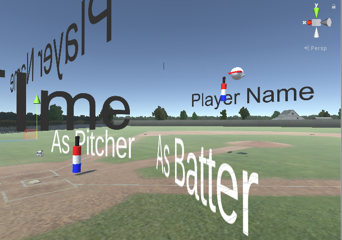
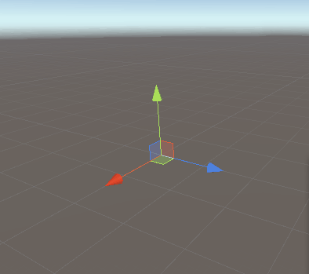
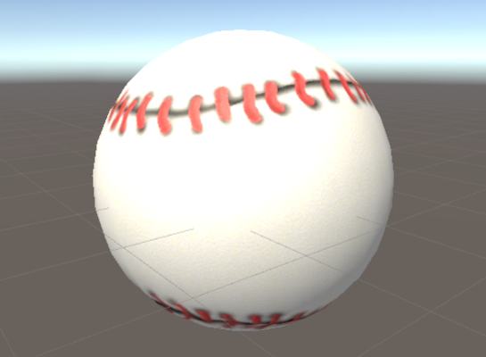
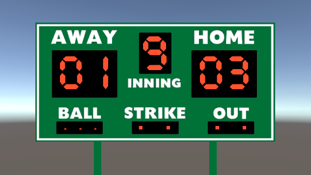
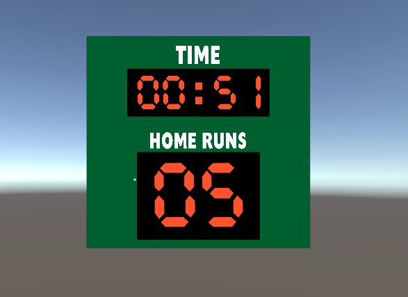

This week the team is focusing on creating the playable demo that meets MVP as well as basis of final goal. Terrell and Stephen worked on SinglePlayer Modes and mechniques. Andrew worked on Asset and Daoyi worked on the networking solution for Rift.
Gameplay Demo
Daoyi - Networking
Finish the Networking base frame for 2 players. By establishing a peer-to-peer connection players can have shared Head+Bat/PitcherGlove+Ball movements with a constant refreshing counts of >90/second. There's no distinguishible latency using Rift and lab Ethernet. Also add some particle effect and plan to contributes more FXs in the future.
 For next week(s) I would focus on optimizition connection to ensure "quest ready": for example now the priority of physics simulation is given to the Batter side which is extreamly unrealible and sensitive to network flaws. It is also a great idea to sync only on impact/collision points since ball movements are determinent. This will invlove more collabrates with Terrell's works.
Terrell and Stephen - Batting Mechanic
Early in the week, I worked with Stephen in order to make improvements to the batting mechanics. Previously, the ball would be launched along one of several fixed paths whenever the ball hit the bat, but now the ball can be hit into any direction. To do this, we moved the logic for hitting the ball from the bat to the ball so whenever the ball hits the bat and breaks out of its animation, it also launches itself depending on the angle that it hit the bat at. The speed of the hit is driven by how hard the player swings the bat, but we have a parameter that we can use to adjust the strength of the hit, so we can tweak that value later in order to make it easier or harder to hit homeruns. We also added haptic feedback for when the bat hits the ball. Now the controllers vibrate depending on how hard the hit was.
Terrell - Target Practice
In preparation for our mid-quarter progress report, I worked on creating the target practice gamemode to show off the improvements that we made to the batting. Since we have already been using a scene with an auto-pitcher and batter for testing batting mechanics, the main task to get this game-mode working was creating targets that disappeared when hit and a way of tracking information about how many targets have been hit. For the targets, I made cylindrical zones outside the field to track where home runs were hit, and used spherical targets for places on and above the field. To visualize the targets, I used cylinders that faded away as they went up away from the ground and a particle system that created a rotating ring around the spherical targets.
Terrell - Plans for next week
We want to work on the zombie game mode next, so I will be helping with that by making it so that balls explode on impact to deal damage to nearby zombies. Also, I want to work on the target practice mode to improve its gameplay elements. Right now everything is fairly basic: none of the targets move, and nothing happens whenever all of them have been hit. To improve this, I can make the targets move across the field, disappear after a set time, and keep track of a score that gets shown at the end of the game. By doing this, we can create a high-score system to give a clear sense of progress and make replaying the gamemode more engaging.
Additionally, I want to reorganize the pitching system so that it is easier to add new pitches and adjust existing ones, as well as create a new type of pitch. Right now, the spiral ball is the only special pitch, so having either a ball that wiggles around or zig-zags would be interesting.
Stephen - Plans for next week
Setting up the grey box scene for the zombie mode. Specfically, setting up boxes that represent zombies. Having those zombies move at variable rates of speed torwards the player to try to attack and defeat the player. I will give the zombies an internal life bar that will be depleted by being hit by the bat or getting hit with a grenade. I will be working with Terrell to combine our scenes together into a working game mode. Once the basics of the game mode are complete I will work on making quality of life adjustments.
Andrew - Assets
This week I focused on assets that are essential to the game modes. I finished a baseball texture, which seems simple, but ended up being trickier than expected due to spherical UV projections. I had to experiment with a couple different projections in order to get the seams to look correct from different angles. I used a base leather material, and hand painted the stitching over it.
In addition, I created 2 scoreboards, each corresponding to different game modes. The first is a general baseball scoreboard, with a home and away score counter, an inning counter, and an out, strike and ball counter. This is more relevant to our multiplayer mode, where we can keep track of strikes and balls.
The second is the scoreboard for the Homerun Derby mode with a timer, and a homerun counter. The timer can run independently using coroutines, and the ui text elements will automatically update with the timer.
Andrew - Game Modes
In conjunction with the scoreboard, I have been working on the game logic for the homerun derby. I have added colliders to the map to test when a homerun is hit, and it triggers events to update score, and eventually trigger events.
Andrew - Plans for next week
The current plan is to finish the game logic and scoreboard logic for the homerun derby mode. Next week I am going to start on implementing the zombie survival base game mode. In addition, I am going to create game avatars to represent players in game and over a multiplayer connection. I am going to have to test hand IK targets with VR controllers to see if its possible to make a good looking avatar with full arms. If thats not possible, we will most likely have to look into disconnected arms or hands
I also plan on finishing updating the blog site. We decided to upgrade because we felt the Jekyll Theme was a little plain. The HTML template is not completely finished, so stay tuned for more updates.